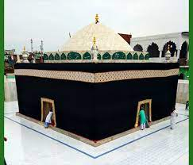

Zinda Shah Madar

Sayyed Ahmed Badiuddin Zinda Shah Madar was a Sunni Muslim ascetic, Sufi saint who was born on 1st of
Shawwal ul Mukarram 242 Hijri or 30th January, 857 A.D.
Name
Badiuddin means exposing the love of Islam in hearts of people. The Khalifa of Hazrat Nasiruddin Chiragh
Dehli, Hazrat Mir Jafar Makki, explained the term Qutubul Madar as a rank in the awliyas who have the
power to confiscate the powers of Qutub (rank of Auliyas). "Zinda" is an Urdu-Hindi term means "living",
per the basic principle of Sufism that Sufi saints stay alive forever (death is the intermediate stage
which they have to just pass). Makanpuri in his name, represents the town Makanpur (a town in India
where this sufi saint is resting today).
Life
Hazrat Huzaifa Mura'ashi was the notable teacher of Madar-ul-aalameen. He became Mufti, Muhaddis and
Mufakkir at the age of 14. He later travelled to Baitul Muqaddas and met Hazrat Bayazid Bastami. He took
oath of allegiance at the hand of Bastami and live there till the later's wisal ib 261 Hijri. At the age
of 19, he further returned to his hometown Aleppo, Syria. After taking permission from his mother, he
went to Mecca and Medina and later to Najaf before coming back to Madina. According to Author James
Wise, he moved to India from Madina, particularly Makanpur as per the direction of Prophet Muhammad
(peace be upon him) to save the local population of Makanpur from the evil demon named "Mauckna", author
further mentioned that Zinda Shah Madar succeeded in his mission to save the community from the evil. He
received permission of Habs-e-Dam from Prophet Muhammad ﷺ. James also reported many miracles of the
saint in his book, "Notes on the Races, Castes and Trades of Eastern Bengal". He received Wisal on 17
Jamadiul awwal, 838 Hijri or 17 December 1434 A.D. approximately the age of 578 years. Sultan Ibrahim
Shargi, of Jaunpur, carried his coffin, and constructed a Sufi mausoleum over his Mazar Mubarak. Urs is
celebrated annually on 7th Rajab globally at his Various "Chillas" and at Makanpur by thousands of
pilgrims, of every religion. He is well known for Habs-e-dam.
Chilla
Many Chilla(s) of Hazrat Badiuddin Zinda Shah Madar are located in various parts of India. Devotees
believed that those Chillas are the places where Madar Shah meditated. One such chilla is in Bhandara
district of Maharashtra, known for its various miraculous incidents. Naeemi mentioned that he had 1442
chilla gah across the world.
Dam Madar Beda Par
Dam Madar Beda Par is the common chant among the followers of Zinda Shah Madar. Qawwali "Dam Madar Beda
Par" by Arshad Kaamli is based on the same chant. This phrase is regarded as the charm for snake bite
and scorpion's stings. Many Madari fakirs walk on fire, barefooted by saying "Dam Madar Beda Par"
without getting any burn.
Zinda Shah Madar Shajra
Shah Madar's genealogy goes back to Rasul Allah Sallallahu Alaihi wasallam through
Ali Karam Allahu Wajhul Kareem
Imam Hussain Radiallahu Taala anhu
Hazrat Imam Zainul Abedeen Radiallahu Taala Anhu
Hazrat Imam Muhammad al-Baqir Radiallahu Taala Anhu
Hazrat Inam Jafar as Sadiq Radiallahu Taala anhu
Hazrat Sayyed Ismail Radiallahu Taala Anhu
Hazrat Sayyed Muhammad Radiallahu Taala Anhu
Hazrat Sayyed Ahmed Radiallahu Taala Anhu
Hazrat Sayyed Zahiruddin Radiallahu Taala Anhu
Hazrat Sayyed Bahauddin Radiallahu Taala Anhu
Hazrat Sayyed Alu Halawi Radiallahu Taala Anhu
Hazrat Sayyed Badiuddin Pir Zinda Shah Madar
He was Sayyed from both paternal and maternal side, his mother, Bibi Fatema Tabrizi, was Hasani Sayyed, and his father was Hussaini Sayyed.
.jpeg )
.jpeg)
.jpeg )